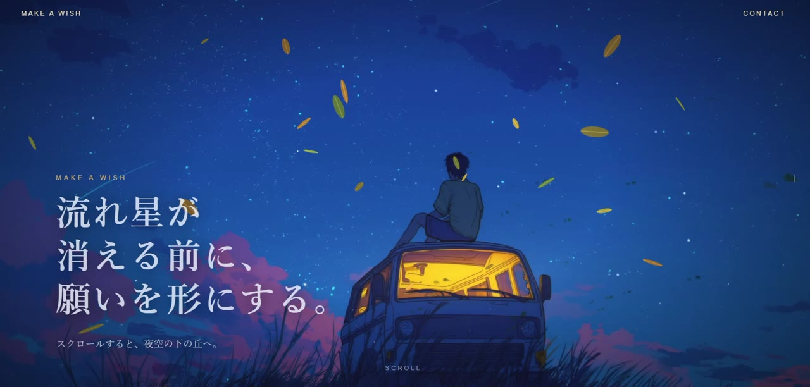

すべての実績
これまでに制作した作品の一覧です。カテゴリで絞り込めます。



TABITOKI MARKET
日本発のトラベル用品を集めた旅行EC。日英・円/ドル切替、会員登録、在庫連動の管理画面まで実装しています。
デモ：準備中（サーバーの更新後に公開）

C.C.Donuts
ドーナツ店のショッピングサイト。ログイン、カート、お気に入り、検索、購入確認までの一連の流れを実装しています。
デモ：準備中（サーバーの更新後に公開）
Journeys Magazine（旅行誌の表紙）
架空の旅行誌の表紙・誌面構成。※架空の雑誌です。